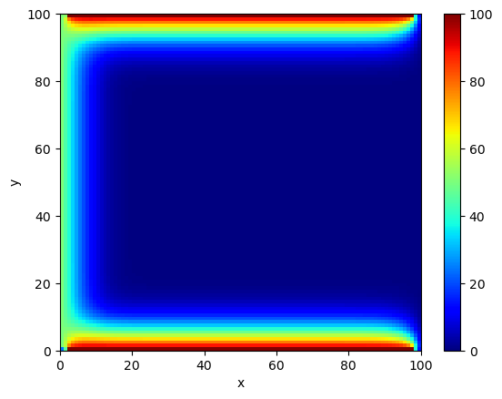

Heat
In 1807 Jean Baptiste Joseph Fourier presented a manuscript outlining the heat equation to the Institut de France:
$$
\frac{\partial u}{\partial t} = b\nabla^2 u
$$
This equation models the conduction of heat in a continuous medium. For more historical background, see the article [0] by T.N. Narasimhan.
This equation looks a bit fearsome. Let's try approaching it from a computational angle.
We'll consider heat conduction on a two-dimensional rectangle. Think of the surface of a metal sheet for instance. The function \(u(x,y,t)\) gives the temperature at the point \((x,y)\) at time \(t\). The quantity \(\nabla^2 u(x,y,t)\) is called the Laplacian of \(u\). In our two-dimensional case, it is defined to be $$ \nabla^2 u = \frac{\partial^2 u}{\partial x^2} + \frac{\partial^2 u}{\partial y^2} $$
Finite Difference Approximation
Let's consider our first approximation scheme. Recall the definition of the derivative of a single-variable real function \(f(x)\) $$ \frac{df}{dx} = \lim_{h\rightarrow 0} \frac{f(x+h) - f(x)}{h} $$
This definition naturally suggests the following finite difference approximation $$ \frac{df}{dx} \approx \frac{f(x+h)-f(x)}{h} $$ with the approximation increasing in quality as \(h\rightarrow 0\). This is known as a forward difference approximation for the derivative. For convenience, we write the forward difference as \(\Delta_{+x}f(x) := f(x+h) - f(x)\).
Likewise we have backward differences $$ \Delta_{-x}f(x) := f(x) -f(x-h) $$ and also the central difference $$ \delta_xf(x) := f(x+\frac{1}{2}h) - f(x-\frac{1}{2}h) $$
Consider the second-order central difference $$ \delta_x \delta_x v(x, t) = \delta_x v(x + \frac{1}{2}\Delta x, t) - \delta_x v(x-\frac{1}{2}\Delta x, t) $$ where $$ \begin{equation*} \begin{aligned} \delta_x v(x + \frac{1}{2}\Delta x, t) &= v(x + \frac{1}{2}\Delta x + \frac{1}{2}\Delta x, t) - \delta_x v(x + \frac{1}{2}\Delta x -\frac{1}{2}\Delta x, t)\\ &= v(x + \Delta x, t) - v(x, t) \end{aligned} \end{equation*} $$ and $$ \begin{equation*} \begin{aligned} \delta_x v(x - \frac{1}{2}\Delta x, t) &= v(x - \frac{1}{2}\Delta x + \frac{1}{2}\Delta x, t) - \delta_x v(x - \frac{1}{2}\Delta x -\frac{1}{2}\Delta x, t)\\ &= v(x, t) - v(x - \Delta x, t) \end{aligned} \end{equation*} $$ Putting this together we find $$ \delta_x \delta_x v(x, t) = \delta_x^2 v(x,t) = v(x + \Delta x, t) - 2v(x, t) + v(x - \Delta x, t) $$ thus we've obtained a finite difference approximation to the second derivative.
Approximating the Heat Equation
We can now use our approximations gained above to get $$ \frac{\partial u}{\partial t} = b\nabla^2 u \approx b\frac{u(x+h, y, t) + u(x,y+h,t) +u(x,y-h,t) +u(x-h,y,t) - 4u(x,y,t)}{h^2} $$ assuming that the step sizes are equal: \(\Delta x = \Delta y = h >0\)
Finally, upon forward differencing the temporal part, we obtain a one-step update equation: $$ u(x, y, t+\Delta t) \approx u(x,y,t) + \frac{b\Delta t}{h^2}\left[u(x+h, y, t) + u(x,y+h,t) +u(x,y-h,t) +u(x-h,y,t) - 4u(x,y,t)\right] $$
Now we're ready to write some code. I'd like to give credit to the Python for HPC course by Sebastian Kehl, Sebastian Ohlmann, Klaus Reuter (MPCDF).
The heart of the matter is computing the Laplacian, so we'll look at that first. In particular let's look at a "naive" implementation, a sort-of first thought solution:
def laplacian_naive(G):
G = np.pad(G, 1, 'constant')
L = np.empty_like(G)
for x in range(1, G.shape[0]-1):
for y in range(1, G.shape[1]-1):
L[x, y] = G[x+1, y] + G[x-1, y] + G[x, y+1] + G[x, y-1] - 4.0 * G[x, y]
return L[1:-1, 1:-1]
G and iterates through the grid elements one (x,y) pair at a time while applying the approximation we derived above:
$$
\nabla^2 u(x,y) \approx u(x,y+h,t) +u(x,y-h,t) +u(x-h,y,t) - 4u(x,y,t)
$$
to compute the one-step evolution of G which is stored in the copy created at the start.
Let's model the situation where heat is constantly provided at 3 of the 4 edges of the plate. We'll assume that the the temperature at these points is always at a fixed value. The following function is meant to accomplish this by setting the appropriate areas of the grid to some pre-determined value:
def set_boundary_conditions(G):
G[0,2:-2] = 100.0
G[1:,0] = 50.0
G[-1, 2:-2] = 100.0
We're now ready to simulate the system:
N = 100
dt = 1.0
D = 0.1
steps = 250
U = np.zeros((N, N), dtype=np.float32)
set_boundary_conditions(U)
for _ in range(steps):
U += dt * D * laplacian_naive(U)
set_boundary_conditions(U)
The grid can be visualized at the end with
def plot(U, vmax):
plt.clf()
plt.xlabel("x")
plt.ylabel("y")
plt.pcolormesh(U, cmap=plt.cm.jet, vmin=0.0, vmax=vmax)
plt.colorbar()

That's nice but it's slow. Consider the following solution based on numpy's roll function
def laplacian(G):
G = np.pad(G, 1, 'constant')
return (np.roll(G, 1, 0) + np.roll(G, -1, 0) + np.roll(G, 1, 1) + np.roll(G, -1, 1) - 4 * G)[1:-1,1:-1]
G[x+1, y] + G[x-1, y] + G[x, y+1] + G[x, y-1] - 4.0 * G[x, y]
for multiple points on the grid in parallel. The zero padding added to the edges helps the temperature on the edges decay.
References
- [0] Narasimhan, T.N., Fourier's heat conduction equation: History, influence, and connections
- [1] Rougier, Nicolas P., From Python to Numpy
- [2] Morton, K.W., Mayers, D.F., Numerical Solution of Partial Differential Equations - An Introduction, Cambridge University Press, 2005
- [3] Sebastian Kehl, Sebastian Ohlmann, Klaus Reuter, Python for HPC